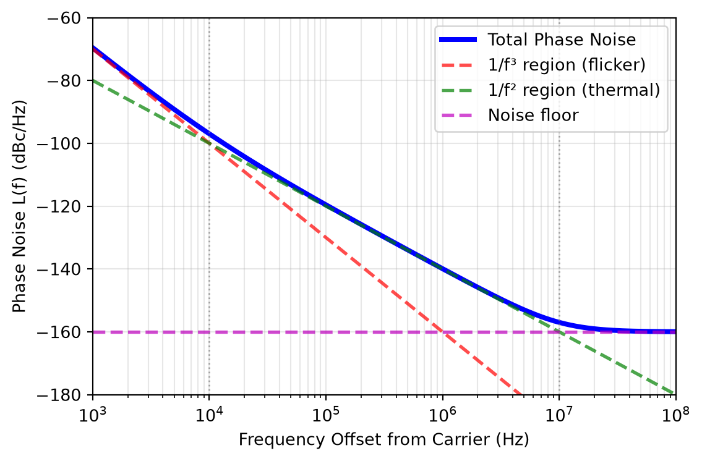
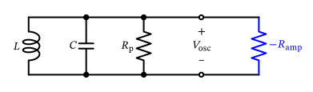
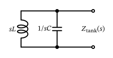
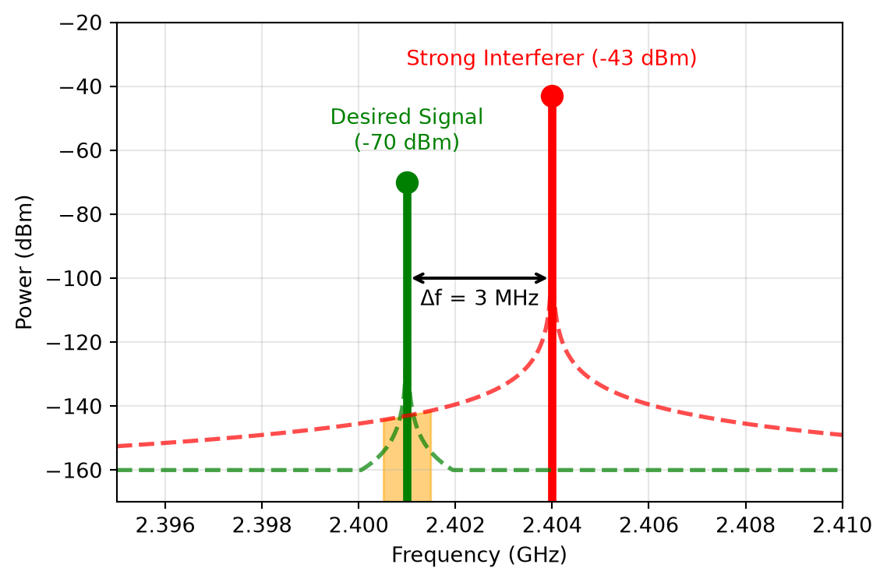
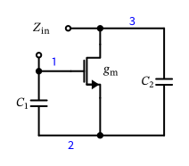
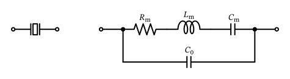
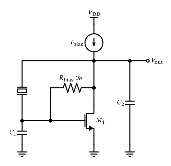
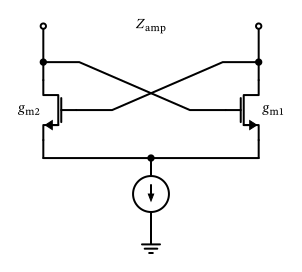
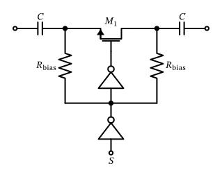

Radio-Frequency Integrated Circuits
Figure 59: Oscillator symbol.
Figure 60: Three-stage single-ended ring oscillator.
\[ Q = 2 \pi \frac{\text{Average energy stored}}{\text{Energy loss per cycle}} = \frac{\omega_0}{\Delta \omega} = \frac{\omega_0}{2} \sqrt{ \left( \frac{d A}{d \omega} \right)^2 + \left( \frac{d \varphi}{d \omega} \right)^2 } \tag{55}\]

Figure 61: LC parallel tank with connected negative resistance forming an LC oscillator.
An alternative implementation of setting the oscillation amplitude is to use an automatic level control (ALC) loop, which measures the oscillation amplitude and adjusts the amplifier gain accordingly to maintain a constant output amplitude. This approach can improve the stability of the oscillation amplitude over process, voltage, and temperature variations.
An alternative to starting the oscillation from thermal noise (which can take considerable time depending on the \(Q\) of the resonator) is to provide a known initial condition to the resonator, e.g., by pre-charging the capacitor \(C\) to a certain voltage before enabling the amplifier. This way, the oscillation can start immediately from this initial energy stored in the resonator.
\[ E_\mathrm{stored} = \frac{C V_\mathrm{osc,p}^2}{2} \]
\[ E_\mathrm{loss} = \frac{V_\mathrm{osc,p}^2}{2 R_\mathrm{p}} \cdot \frac{1}{f_0} \]
\[ Q = 2 \pi \frac{E_\mathrm{stored}}{E_\mathrm{loss}} = \omega_0 C R_\mathrm{p} \]
\[ v_\mathrm{osc}(t) = V_\mathrm{osc,p}(t) \cdot \cos[ \omega_0(t) t + \varphi(t) ] \]

Figure 62: LC parallel tank with oscillator in steady-state operation.
\[ Z_\mathrm{tank}(s) = \frac{s L \frac{1}{s C}}{s L + \frac{1}{s C}} = \frac{s L}{1 + s^2 L C}. \]
\[ Z_\mathrm{tank}(j \omega_0 + j \Delta \omega) =\frac{j (\omega_0 + \Delta \omega) L}{1 - (\omega_0 + \Delta \omega)^2 L C} \]
\[ Z_\mathrm{tank}(j \omega_0 + j \Delta \omega) = -\frac{j}{2 \Delta \omega C}. \]
\[ |Z_\mathrm{tank}(j \omega_0 + j \Delta \omega)| = \frac{R_\mathrm{p}}{2 Q} \left( \frac{\omega_0}{\Delta \omega} \right) \]
\[ \overline{I_n^2} = \frac{4 k T F}{R_\mathrm{p}} \]
\[ \overline{V_n^2}(\Delta \omega) = |Z_\mathrm{tank}(j \omega_0 + j \Delta \omega)|^2 \cdot \frac{4 k T F}{R_\mathrm{p}} = \frac{k T F R_\mathrm{p}}{Q^2} \left( \frac{\omega_0}{\Delta \omega} \right)^2 \]
\[ \mathcal{L}\left\{\Delta \omega\right\} = \frac{\frac{1}{2} \frac{k T F R_\mathrm{p}}{Q^2} \left( \frac{\omega_0}{\Delta \omega} \right)^2}{\left( \frac{V_\mathrm{p}}{\sqrt{2}} \right)^2} = \frac{k T F R_\mathrm{p}}{V_\mathrm{p}^2} \cdot \frac{1}{Q^2} \cdot \left( \frac{\omega_0}{\Delta \omega} \right)^2 \tag{56}\]
\[ \mathcal{L}\left\{\Delta \omega\right\} = \frac{k T F}{V_\mathrm{p}^2 \, \omega_0^2 C^2 R_\mathrm{p}} \cdot \left( \frac{\omega_0}{\Delta \omega} \right)^2 \tag{57}\]

\[ \mathcal{L}\left\{\Delta \omega \ll\right\} \propto \frac{1}{\omega_\mathrm{B}^2 + \Delta \omega^2} \]
Note 7: Phase Noise and Frequency Division
When using a frequency divider to generate a lower-frequency LO signal from a higher-frequency oscillator (e.g., to generate IQ phases), the phase noise of the divided signal is affected by the division ratio \(N\) (Da Dalt and Sheikholeslami 2018). Specifically, the phase noise of the divided signal improves by \(20 \log_{10}(N)\) dB compared to the original oscillator phase noise. This means that if you divide the frequency by a factor of 2, the phase noise will be lowered by 6 dB!
The statement above is related to the phase noise at the output coming from the input of the divider. Of course, the frequency divider itself also contributes some additional phase noise, which can degrade the overall phase noise performance. However, in many practical cases, the improvement due to frequency division outweighs the additional noise introduced by the divider.
Jitter is a time-domain representation of phase noise. It quantifies the timing variations of a periodic signal, such as the zero-crossings or rising edges of a clock signal. Jitter is typically measured in seconds (or fractions thereof) and can be expressed as root mean square (RMS) jitter or peak-to-peak jitter. The relationship between phase noise and RMS jitter can be approximated by the following equation (Da Dalt and Sheikholeslami 2018): \[ \sigma_\mathrm{a} = \frac{1}{2 \pi f_0} \sqrt{2 \int_{f_1}^{f_2} \mathcal{L}\left\{f\right\} df} \tag{58}\]
\[ P_\mathrm{RM} = P_\mathrm{interferer} + \mathcal{L}\left\{\Delta f\right\} + 10 \log_{10}(B) \tag{59}\]
Note 8: Reciprocal Mixing Example
Let us assume the following example from a Bluetooth LE receiver: The sensitivity target for the RX is -70 dBm with an SNR of 10 dB for a 1 MHz channel. An adjacent channel interferer is present at -27 dB channel to interferer ratio at an offset of 3 MHz. How much phase noise can the LO have to meet the sensitivity target?
From the sensitivity target and the SNR requirement, we can calculate the maximum allowable noise floor in the RX. We add a margin of 3 dB to account for implementation losses:
\[ \begin{split} P_\mathrm{noise,max} &= P_\mathrm{sens} - \text{SNR} - P_\mathrm{margin} \\ &= -70\,\text{dBm} - 10\,\text{dB} - 3\,\text{dB} = -83\,\text{dBm} \end{split} \]
The interferer power is:
\[ \begin{split} P_\mathrm{interferer} &= P_\mathrm{sens} - \text{C/I} \\ &= -70\,\text{dBm} + 27\,\text{dB} = -43\,\text{dBm} \end{split} \]
Using Equation 59, we can express the maximum allowable phase noise at 3 MHz offset at 2.4 GHz as:
\[ \begin{split} \mathcal{L}\left\{3\,\text{MHz}\right\} &= P_\mathrm{noise,max} - P_\mathrm{interferer} - 10 \log_{10}(B/\text{Hz}) \\ &= -83\,\text{dBm} - (-43\,\text{dBm}) - 60\,\text{dB} = -100\,\text{dBc/Hz} \end{split} \]


Figure 65: Circuit diagram of a single-ended negative resistance implementation.
\[ Z_\mathrm{in}(s) = -\frac{g_\mathrm{m}}{\omega^2 C_1 C_2} + \frac{C_1 + C_2}{s C_1 C_2} = -R_\mathrm{amp} + \frac{1}{s C_\mathrm{amp}} \]
| Reference Node | Amplifier Configuration | Common Name |
|---|---|---|
| Node 1 (Gate) | common-gate | grounded-gate (also called common-base Colpitts) |
| Node 2 (Source) | common-source | Pierce oscillator |
| Node 3 (Drain) | common-drain | Colpitts oscillator |
A Note on Oscillator Naming
The naming in Table 5 is not used consistently across the literature. The grounded-source case is universally called the Pierce oscillator, but both the grounded-gate and the grounded-drain variants are referred to as “Colpitts” by different authors (they differ only in which of the two capacitors provides the feedback), and some crystal-oscillator literature treats the grounded-drain circuit as just another implementation of the Pierce oscillator (Vittoz 2010).
What is not a grounding variant is the Clapp oscillator: it is a Colpitts with an additional capacitor placed in series with the inductor, introduced to keep the transistor’s parasitic capacitances from pulling the frequency (Clapp 1948). Interestingly, a quartz crystal oscillator gets this for free: as we will see in Figure 66, the motional branch of a crystal is \(L_\mathrm{m}\) in series with a very small \(C_\mathrm{m}\), so \(C_\mathrm{m}\) plays exactly the role of Clapp’s series capacitor. This is the very reason why the crystal can be pulled only by a few ppm (see Equation 61), and thus why quartz oscillators are so stable.

Figure 66: Quartz crystal equivalent circuit.

Figure 67: Circuit diagram of a single-ended Pierce crystal oscillator operating the quartz between series and parallel resonance where it acts as a large high-Q inductor.
\[ f_\mathrm{s} = \frac{1}{2 \pi \sqrt{L_\mathrm{m} C_\mathrm{m}}}, \tag{60}\]
\[ f_0 \approx f_\mathrm{s} \left[ 1 + \frac{C_\mathrm{m}}{2 (C_0 + C_\mathrm{load})} \right]. \tag{61}\]

Figure 68: A cross-coupled differential pair.
\[ Z_\mathrm{in} = -\frac{2}{g_\mathrm{m}} \]
Figure 69: An LC differential oscillator using an NMOS cross-coupled differential pair.
Figure 70: An LC differential oscillator using a PMOS cross-coupled differential pair.
\[ f_0 = \frac{1}{2 \pi \sqrt{L C}} \]
Figure 71: An LC differential oscillator using a PMOS and an NMOS cross-coupled differential pair.
\[ K_\mathrm{VCO} = \frac{d f_0}{d V_\mathrm{tune}} \]
Watch the Units of \(K_\mathrm{VCO}\)!
Data sheets and measurements state \(K_\mathrm{VCO}\) as a frequency sensitivity in MHz/V or GHz/V, as defined above. All loop equations that follow (in Section 6.7 and throughout Section 7) instead need the angular frequency sensitivity in rad/(s\(\cdot\)V), which is larger by a factor of \(2 \pi\):
\[ K_\mathrm{VCO} \big|_\mathrm{rad/(s \cdot V)} = 2 \pi \cdot K_\mathrm{VCO} \big|_\mathrm{Hz/V} \]
Forgetting this factor is one of the most common sources of error in PLL loop design: since the natural frequency scales as \(\omega_\mathrm{n} \propto \sqrt{K_\mathrm{VCO}}\), a missing \(2 \pi\) moves the loop bandwidth by a factor of \(\sqrt{2 \pi} \approx 2.5\), and it moves the damping factor by the same amount (in one direction or the other, depending on the loop filter used). In the remainder of these notes, \(K_\mathrm{VCO}\) inside loop equations is always understood to be in rad/(s\(\cdot\)V).

Figure 72: A switched capacitor for use in an oscillator’s switched-capacitor tuning bank.
\[ \omega_\mathrm{VCO}(t) = \omega_0 + K_\mathrm{VCO} \cdot V_\mathrm{tune}(t) \]
\[ \varphi_\mathrm{VCO}(t) = \int_0^t \omega_\mathrm{VCO}(\tau) d\tau = \omega_0 t + K_\mathrm{VCO} \int_0^t V_\mathrm{tune}(\tau) d\tau. \]
Figure 73: A model of a VCO as a perfect integrator for the excess phase in the \(s\)-domain.